Ver código
options(
knitr.table.format = "html",
scipen = 999
)options(
knitr.table.format = "html",
scipen = 999
)ipak <- function(pkg){
options(repos = c(CRAN="https://cloud.r-project.org"))
new.pkg <- pkg[!(pkg %in% rownames(installed.packages()))]
if(length(new.pkg)) install.packages(new.pkg, dependencies = TRUE)
invisible(lapply(pkg, function(p)
suppressPackageStartupMessages(library(p, character.only = TRUE))
))
}
packages <- c("tidyverse","kableExtra","psych","readxl")
ipak(packages)Una organización de consumidores anota regularmente el número de defectos importantes que se encuentran en un automóvil nuevo. De sus estudios ha encontrado que la función de distribución de la variable aleatoria X anteriormente mencionada es:
F(x) = \begin{cases} 0 & \text{si } x < 0 \\ 0.06 & \text{si } 0 \le x < 1 \\ 0.19 & \text{si } 1 \le x < 2 \\ 0.39 & \text{si } 2 \le x < 3 \\ 0.67 & \text{si } 3 \le x < 4 \\ 0.92 & \text{si } 4 \le x < 5 \\ 0.97 & \text{si } 5 \le x < 6 \\ 1 & \text{si } 6 \le x \end{cases}
La función de distribución acumulada es:
F(x)= \begin{cases} 0 & x < 0 \\ 0.06 & 0 \le x < 1 \\ 0.19 & 1 \le x < 2 \\ 0.39 & 2 \le x < 3 \\ 0.67 & 3 \le x < 4 \\ 0.92 & 4 \le x < 5 \\ 0.97 & 5 \le x < 6 \\ 1 & x \ge 6 \end{cases}
Primero, a partir de la función de distribución acumulada F(x), calculamos la función de probabilidad (o masa de probabilidad) p(x)=P(X=x), recordando que:
P(X=x)=F(x)-F(x^-)
Entonces:
\begin{aligned} P(X=0) &= 0.06 - 0 = 0.06 \\ P(X=1) &= 0.19 - 0.06 = 0.13 \\ P(X=2) &= 0.39 - 0.19 = 0.20 \\ P(X=3) &= 0.67 - 0.39 = 0.28 \\ P(X=4) &= 0.92 - 0.67 = 0.25 \\ P(X=5) &= 0.97 - 0.92 = 0.05 \\ P(X=6) &= 1.00 - 0.97 = 0.03 \end{aligned}
Probabilidad puntual
P(X=2) = F(2) - F(2^-) = 0.39 - 0.19 = 0.20
Probabilidad acumulada
P(X \ge 3) = 1 - F(3^-) = 1 - 0.39 = 0.61
Intervalo cerrado
P(2 \le X \le 5) = F(5) - F(2^-) = 0.97 - 0.19 = 0.78
Intervalo abierto
P(2 < X < 5) = F(5^-) - F(2) = 0.92 - 0.39 = 0.53
Esperanza
E[X] = \sum x \cdot P(X=x)
E[X] = 0(0.06) + 1(0.13) + 2(0.20) + 3(0.28) + 4(0.25) + 5(0.05) + 6(0.03)
E[X] = 2.8
Var(X) = E[X^2] - (E[X])^2
E[X^2] = 10.18
Var(X) = 10.18 - (2.8)^2 = 2.34
\sigma = \sqrt{2.34} \approx 1.53
# Valores de x
x <- c(0,1,2,3,4,5,6)
# Valores de F(x)
F <- c(0.06,0.19,0.39,0.67,0.92,0.97,1)
# Gráfica tipo escalón
plot(x, F, type="s",
xlab="x",
ylab="F(x)",
main="Función de Distribución Acumulada (CDF)",
lwd=2)
grid()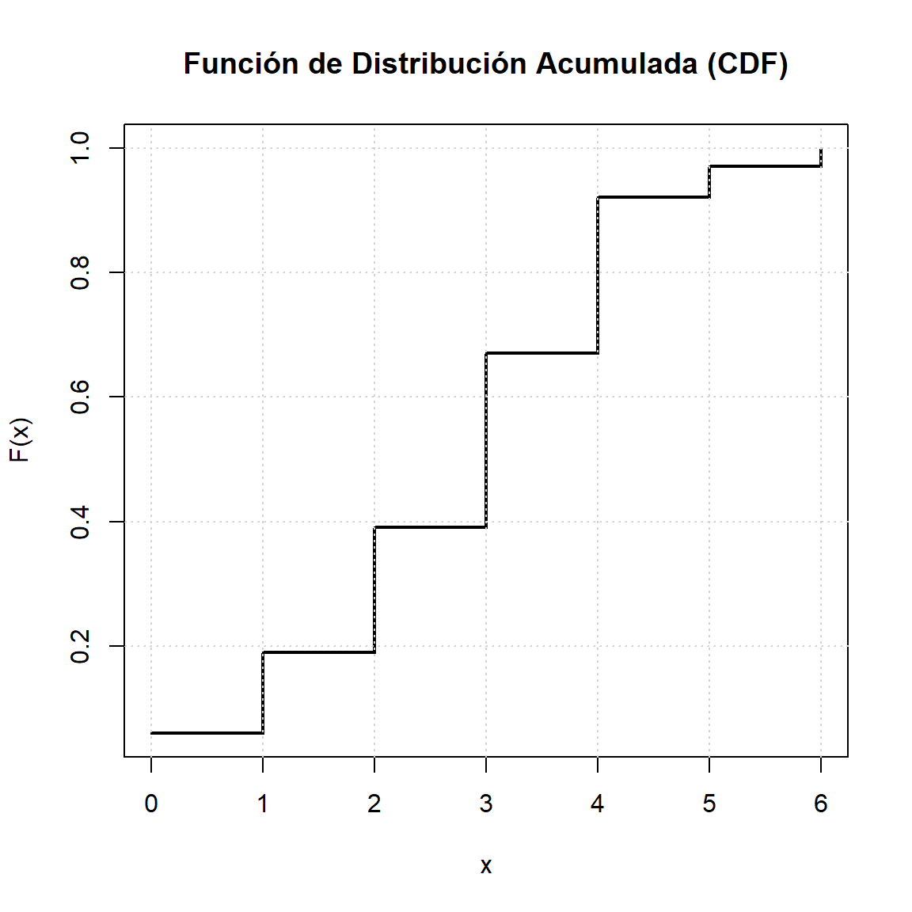
# Función de probabilidad f(x)
f <- c(0.06, 0.13, 0.20, 0.28, 0.25, 0.05, 0.03)
# Gráfica tipo puntos
plot(x, f,
type = "h",
lwd = 3,
xlab = "x",
ylab = "f(x) = P(X = x)",
main = "Función de Probabilidad f(x)",
ylim = c(0, max(f) + 0.05))
points(x, f, pch = 16)
grid()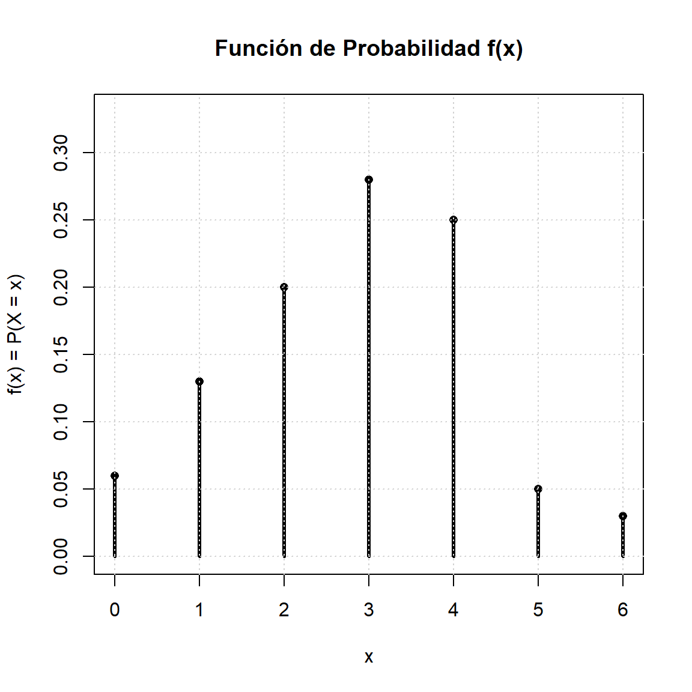
Sea X la variable aleatoria que representa la suma de resultados al lanzar dos dados.
Sea X la variable aleatoria que representa la suma de resultados al lanzar dos dados.
Soporte de la variable aleatoria
El soporte de X es:
S_X=\{2,3,4,5,6,7,8,9,10,11,12\}
Función de probabilidad
Como hay 36 resultados equiprobables, la función de probabilidad es:
f(x)=P(X=x)
\begin{aligned} P(X=2)&=\frac{1}{36} \\ P(X=3)&=\frac{2}{36} \\ P(X=4)&=\frac{3}{36} \\ P(X=5)&=\frac{4}{36} \\ P(X=6)&=\frac{5}{36} \\ P(X=7)&=\frac{6}{36} \\ P(X=8)&=\frac{5}{36} \\ P(X=9)&=\frac{4}{36} \\ P(X=10)&=\frac{3}{36} \\ P(X=11)&=\frac{2}{36} \\ P(X=12)&=\frac{1}{36} \end{aligned}
Función de distribución
La función de distribución acumulada es:
F(x)=P(X\le x)
F(x)= \begin{cases} 0, & x<2 \\ \frac{1}{36}, & 2\le x<3 \\ \frac{3}{36}, & 3\le x<4 \\ \frac{6}{36}, & 4\le x<5 \\ \frac{10}{36}, & 5\le x<6 \\ \frac{15}{36}, & 6\le x<7 \\ \frac{21}{36}, & 7\le x<8 \\ \frac{26}{36}, & 8\le x<9 \\ \frac{30}{36}, & 9\le x<10 \\ \frac{33}{36}, & 10\le x<11 \\ \frac{35}{36}, & 11\le x<12 \\ 1, & x\ge 12 \end{cases}
Probabilidad de que la suma sea mayor que 4 y menor que 8
P(4<X<8)=P(X=5)+P(X=6)+P(X=7)
P(4<X<8)=\frac{4}{36}+\frac{5}{36}+\frac{6}{36}=\frac{15}{36}=\frac{5}{12}
Probabilidad de que la suma sea mayor o igual que 4 y menor o igual que 8
P(4\le X\le 8)=P(4)+P(5)+P(6)+P(7)+P(8)
P(4\le X\le 8)=\frac{3+4+5+6+5}{36}=\frac{23}{36}
Valor esperado y desviación típica
Sea X la suma de los resultados al lanzar dos dados. Su función de probabilidad es:
P(X=x)=\frac{1,2,3,4,5,6,5,4,3,2,1}{36}, \quad x=2,3,\dots,12
El valor esperado se calcula como:
E[X]=\sum_{x=2}^{12} x\,P(X=x)
E[X]=2\left(\frac{1}{36}\right)+3\left(\frac{2}{36}\right)+4\left(\frac{3}{36}\right)+5\left(\frac{4}{36}\right)+6\left(\frac{5}{36}\right)+7\left(\frac{6}{36}\right)
\quad +8\left(\frac{5}{36}\right)+9\left(\frac{4}{36}\right)+10\left(\frac{3}{36}\right)+11\left(\frac{2}{36}\right)+12\left(\frac{1}{36}\right)
E[X]=7
Ahora calculamos E[X^2]:
E[X^2]=\sum_{x=2}^{12} x^2P(X=x)
E[X^2]=\frac{1}{36}\left(2^2\cdot1+3^2\cdot2+4^2\cdot3+5^2\cdot4+6^2\cdot5+7^2\cdot6+8^2\cdot5+9^2\cdot4+10^2\cdot3+11^2\cdot2+12^2\cdot1\right)
E[X^2]=\frac{329}{6}
La varianza es:
\operatorname{Var}(X)=E[X^2]-(E[X])^2
\operatorname{Var}(X)=\frac{329}{6}-7^2=\frac{329}{6}-49=\frac{35}{6}
Finalmente, la desviación típica es:
\sigma_X=\sqrt{\operatorname{Var}(X)}=\sqrt{\frac{35}{6}}\approx 2.415
# Valores del soporte
x <- 2:12
# Probabilidades de la PMF
f <- c(1,2,3,4,5,6,5,4,3,2,1) / 36
# Gráfica de barras
barplot(f,
names.arg = x,
xlab = "x",
ylab = "f(x) = P(X = x)",
main = "Función de probabilidad f(x)",
border = "black")
grid()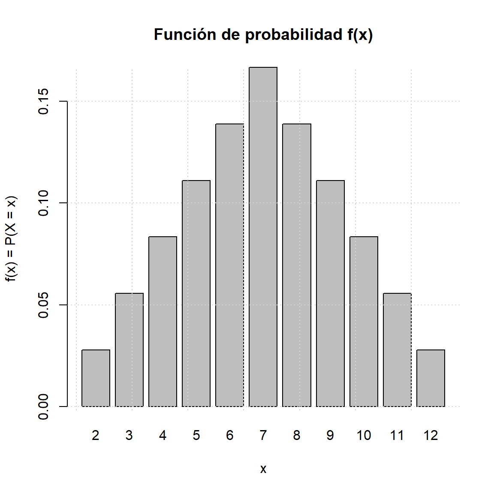
# Valores donde cambia la CDF
x <- 2:12
# Valores acumulados
F <- c(1, 3, 6, 10, 15, 21, 26, 30, 33, 35, 36) / 36
# Gráfica escalonada
plot(x, F,
type = "s",
xlab = "x",
ylab = "F(x)",
main = "Función de distribución acumulada F(x)",
lwd = 2)
points(x, F, pch = 16)
grid()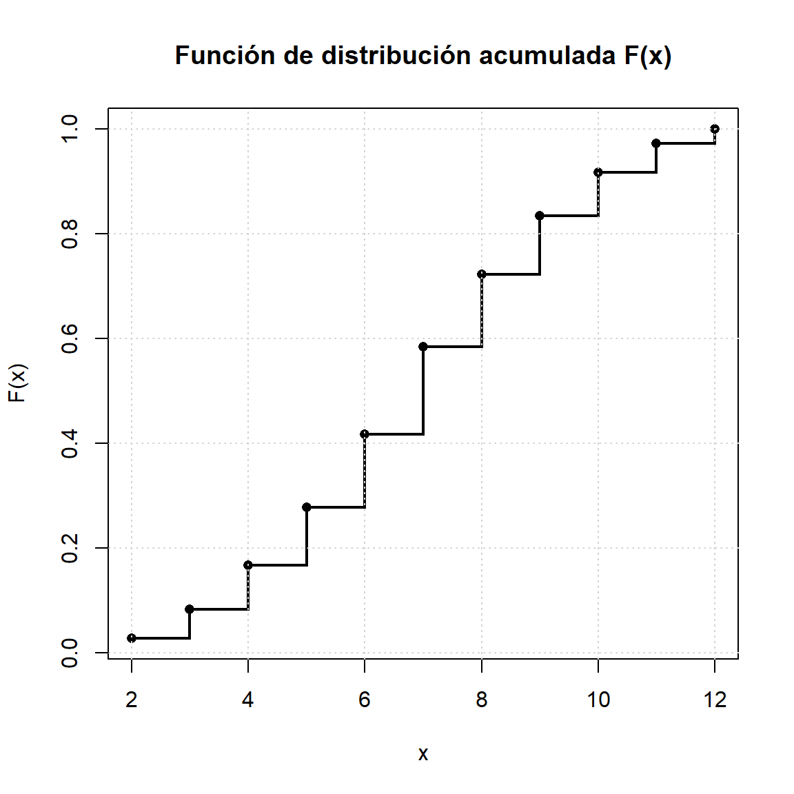
La variable aleatoria X tiene función de densidad dada por:
f(x) = \begin{cases} \frac{1}{3} & \text{si } x \in (0, 1) \\ \frac{1}{3} & \text{si } x \in (2, 4) \\ 0 & \text{en el resto} \end{cases}
Sea X una variable aleatoria continua con función de densidad dada por:
f(x)= \begin{cases} \frac{1}{3}, & x \in (0,1) \\ \frac{1}{3}, & x \in (2,4) \\ 0, & \text{en cualquier otro caso} \end{cases}
Demostrar que f(x) es una función de densidad y representarla gráficamente
Para que una función sea densidad de probabilidad debe cumplir dos condiciones: primero, que sea no negativa en todo su dominio, y segundo, que el área total bajo la curva sea igual a 1.
En este caso, se observa que f(x)\ge 0 para todo x, ya que sus valores solo pueden ser \frac{1}{3} o 0. Por tanto, solo falta verificar la integral total:
\int_{-\infty}^{\infty} f(x)\,dx = \int_0^1 \frac{1}{3}\,dx + \int_2^4 \frac{1}{3}\,dx
Resolviendo cada parte:
\int_0^1 \frac{1}{3}\,dx = \frac{1}{3}(1-0) = \frac{1}{3}
\int_2^4 \frac{1}{3}\,dx = \frac{1}{3}(4-2) = \frac{2}{3}
Sumando ambos resultados:
\int_{-\infty}^{\infty} f(x)\,dx = \frac{1}{3}+\frac{2}{3}=1
Como se cumple que el área total es 1 y además f(x)\ge 0, entonces sí es una función de densidad.
# Rango de valores
x <- seq(-1, 5, by = 0.01)
# Función de densidad
f <- ifelse((x > 0 & x < 1) | (x > 2 & x < 4), 1/3, 0)
# Gráfica
plot(x, f,
type = "l",
lwd = 2,
xlab = "x",
ylab = "f(x)",
main = "Función de densidad f(x)")
grid()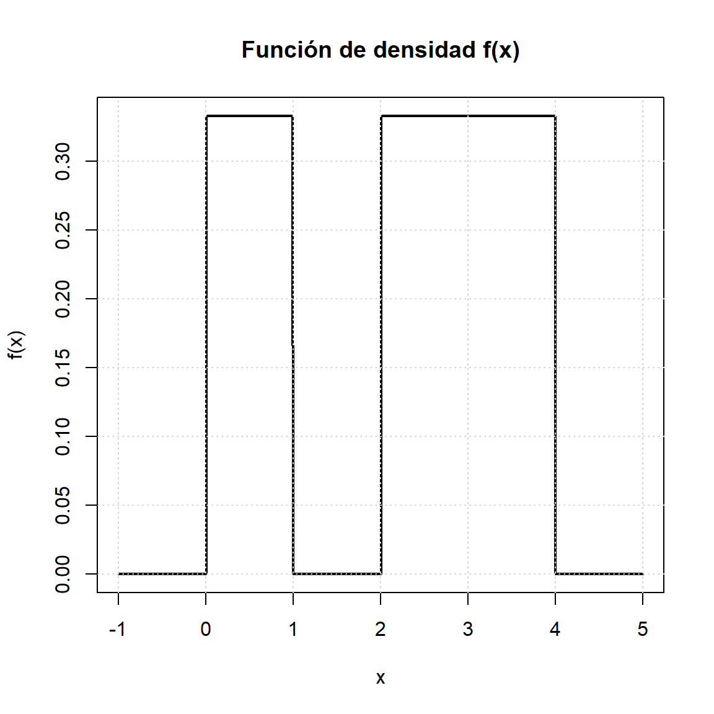
Obtener la función de distribución de la variable aleatoria X
La función de distribución acumulada se define como:
F(x)=P(X\le x)=\int_{-\infty}^{x} f(t)\,dt
Debido a que la densidad tiene dos intervalos distintos, la función acumulada se obtiene por tramos.
Si x \le 0, no se ha acumulado probabilidad, por lo que:
F(x)=0
Si 0 < x \le 1, se integra solo sobre el primer intervalo:
F(x)=\int_0^x \frac{1}{3}\,dt=\frac{x}{3}
Si 1 < x \le 2, ya se acumuló toda la probabilidad del primer intervalo:
F(x)=\int_0^1 \frac{1}{3}\,dt=\frac{1}{3}
Si 2 < x \le 4, se suma lo acumulado en (0,1) más lo que va desde 2 hasta x:
F(x)=\int_0^1 \frac{1}{3}\,dt+\int_2^x \frac{1}{3}\,dt
F(x)=\frac{1}{3}+\frac{x-2}{3}
Finalmente, si x>4, ya se acumuló toda la probabilidad:
F(x)=1
Entonces, la función de distribución queda:
F(x)= \begin{cases} 0, & x \le 0 \\ \frac{x}{3}, & 0 < x \le 1 \\ \frac{1}{3}, & 1 < x \le 2 \\ \frac{1}{3}+\frac{x-2}{3}, & 2 < x \le 4 \\ 1, & x > 4 \end{cases}
Y su respresentación grafica sera:
x <- seq(-1,5,by=0.01)
F <- ifelse(x<=0,0,
ifelse(x<=1,x/3,
ifelse(x<=2,1/3,
ifelse(x<=4,1/3+(x-2)/3,1))))
plot(x, F, type="l",
xlab="x",
ylab="F(x)",
main="Función de distribución acumulada",
lwd=2)
grid()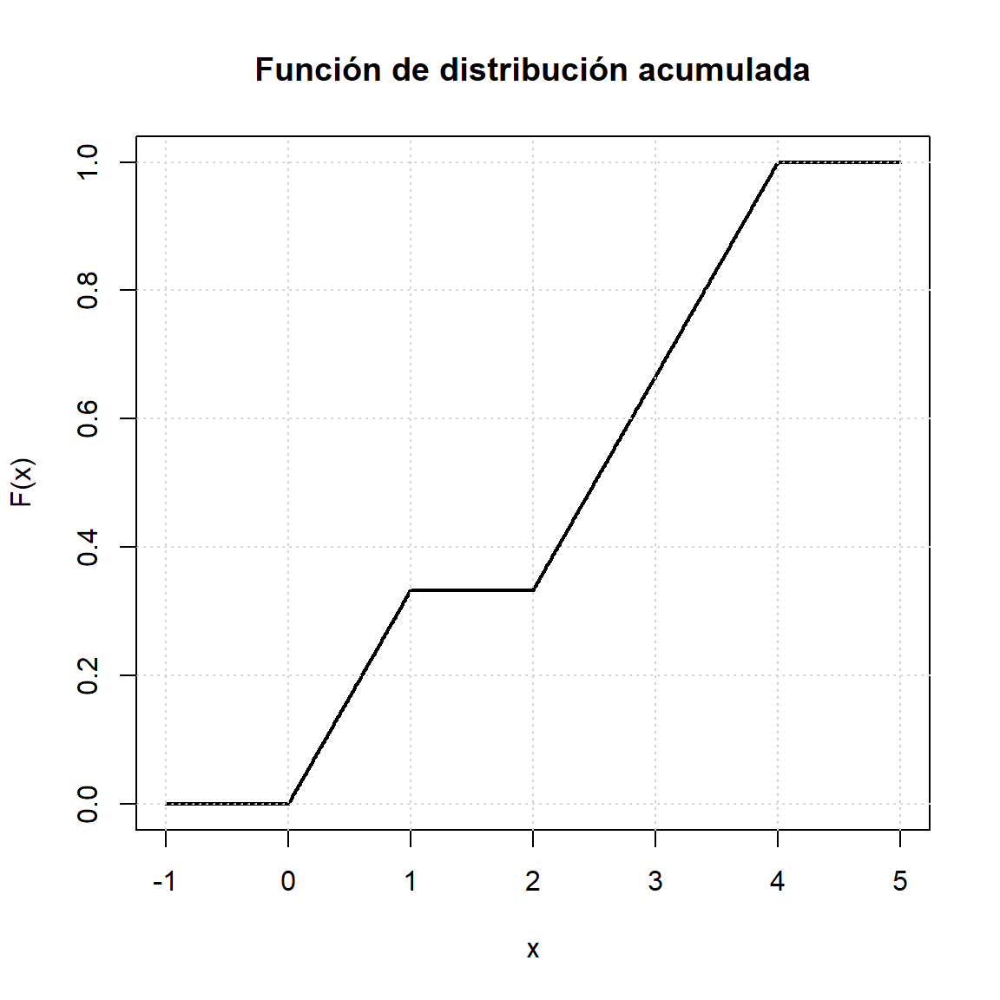
Calcular p[X < 0.6].
Como 0.6 pertenece al intervalo (0,1), se integra la densidad desde 0 hasta 0.6:
P(X<0.6)=\int_0^{0.6}\frac{1}{3}\,dx
P(X<0.6)=\frac{1}{3}(0.6-0)=0.2
Calcular p[0.3 \le X \le 0.6].
Este intervalo también está dentro de (0,1), por lo que basta integrar la densidad entre esos dos puntos:
P(0.3 \le X \le 0.6)=\int_{0.3}^{0.6}\frac{1}{3}\,dx
P(0.3 \le X \le 0.6)=\frac{1}{3}(0.6-0.3)=\frac{0.3}{3}=0.1
Calcular p[0.6 < X < 3.4]
En este caso el intervalo atraviesa la parte donde la densidad es cero, es decir, entre 1 y 2. Por eso, se divide la probabilidad en dos partes:
P(0.6<X<3.4)=P(0.6<X<1)+P(2<X<3.4)
Calculamos la primera parte:
P(0.6<X<1)=\int_{0.6}^{1}\frac{1}{3}\,dx =\frac{1}{3}(1-0.6)=\frac{0.4}{3}
Y la segunda parte:
P(2<X<3.4)=\int_{2}^{3.4}\frac{1}{3}\,dx =\frac{1}{3}(3.4-2)=\frac{1.4}{3}
Sumando ambas:
P(0.6<X<3.4)=\frac{0.4}{3}+\frac{1.4}{3}=\frac{1.8}{3}=0.6
Obtener el rango intercuartílico de la variable aleatoria X
El rango intercuartílico se define como:
RIQ=Q_3-Q_1
donde Q_1 es el primer cuartil y Q_3 es el tercer cuartil. Estos valores se obtienen resolviendo:
F(Q_1)=0.25 \qquad \text{y} \qquad F(Q_3)=0.75
Para Q_1, como 0.25 cae en el tramo 0<x\le 1, usamos:
\frac{x}{3}=0.25
x=0.75
Entonces:
Q_1=0.75
Para Q_3, observamos que 0.75 cae en el tramo 2<x\le 4, así que:
\frac{1}{3}+\frac{x-2}{3}=0.75
Multiplicando por 3:
1+x-2=2.25
x-1=2.25
x=3.25
Por lo tanto:
Q_3=3.25
Finalmente, el rango intercuartílico es:
RIQ=Q_3-Q_1=3.25-0.75=2.5
La variable aleatoria X tiene función de densidad dada por:
f(x) = \begin{cases} x & \text{si } 0 < x < 1 \\ 2 - x & \text{si } 1 \le x < 2 \\ 0 & \text{en cualquier otra parte} \end{cases}
Sea X una variable aleatoria continua con función de densidad dada por:
f(x)= \begin{cases} x, & 0 < x < 1 \\ 2-x, & 1 \le x < 2 \\ 0, & \text{en cualquier otra parte} \end{cases}
Demostrar que f(x) es una función de densidad y representarla gráficamente
Para verificar que una función es densidad de probabilidad, debe cumplir dos condiciones: que sea no negativa en todo su dominio y que el área total bajo la curva sea igual a 1.
En este caso, la función cumple la condición de no negatividad porque en el intervalo (0,1) se tiene f(x)=x, que es positiva, y en [1,2) se tiene f(x)=2-x, que también es positiva o cero en ese tramo. Además, fuera de esos intervalos la función vale cero.
Ahora verificamos el área total:
\int_{-\infty}^{\infty} f(x)\,dx = \int_0^1 x\,dx + \int_1^2 (2-x)\,dx
Calculamos la primera integral:
\int_0^1 x\,dx = \left[\frac{x^2}{2}\right]_0^1 = \frac{1^2}{2} - \frac{0^2}{2} = \frac{1}{2}
Ahora la segunda:
\int_1^2 (2-x)\,dx = \left[2x-\frac{x^2}{2}\right]_1^2
= \left(4-\frac{4}{2}\right) - \left(2-\frac{1}{2}\right) = (4-2)-(2-0.5) = 2-1.5 = \frac{1}{2}
Sumando ambos resultados:
\int_{-\infty}^{\infty} f(x)\,dx = \frac{1}{2}+\frac{1}{2}=1
Como la función es no negativa y su integral total es 1, entonces sí es una función de densidad.
Su representación grafica es:
x <- seq(-1,3,by=0.01)
f <- ifelse(x>0 & x<1, x,
ifelse(x>=1 & x<2, 2-x, 0))
plot(x, f, type="l", lwd=2,
xlab="x", ylab="f(x)",
main="Función de densidad")
grid()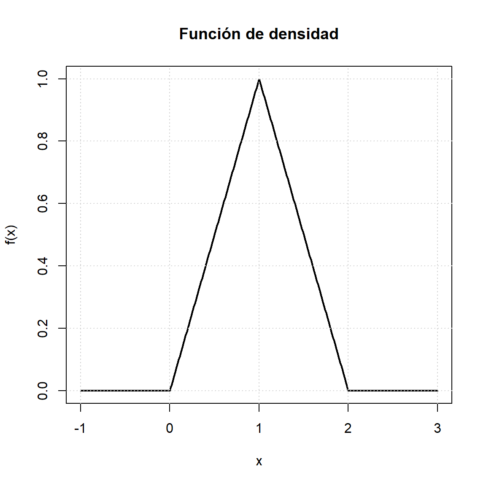
Obtener la función de distribución de la variable aleatoria X y representarla gráficamente
La función de distribución acumulada se define como:
F(x)=P(X\le x)=\int_{-\infty}^{x} f(t)\,dt
Debido a que la densidad cambia de expresión según el intervalo, la función acumulada también debe escribirse por tramos.
Si x \le 0, no se ha acumulado probabilidad, por lo tanto:
F(x)=0
Si 0 < x < 1, solo se integra la parte f(t)=t:
F(x)=\int_0^x t\,dt
F(x)=\left[\frac{t^2}{2}\right]_0^x=\frac{x^2}{2}
Si 1 \le x < 2, ya se acumuló toda la probabilidad del primer intervalo y además se suma la parte correspondiente desde 1 hasta x en la segunda expresión:
F(x)=\int_0^1 t\,dt+\int_1^x (2-t)\,dt
La primera parte vale:
\int_0^1 t\,dt=\frac{1}{2}
Y la segunda:
\int_1^x (2-t)\,dt = \left[2t-\frac{t^2}{2}\right]_1^x
= \left(2x-\frac{x^2}{2}\right)-\left(2-\frac{1}{2}\right) = 2x-\frac{x^2}{2}-\frac{3}{2}
Entonces:
F(x)=\frac{1}{2}+2x-\frac{x^2}{2}-\frac{3}{2} = 2x-\frac{x^2}{2}-1
Finalmente, si x \ge 2, ya se ha acumulado toda la probabilidad:
F(x)=1
Por tanto, la función de distribución queda:
F(x)= \begin{cases} 0, & x \le 0 \\ \frac{x^2}{2}, & 0 < x < 1 \\ 2x-\frac{x^2}{2}-1, & 1 \le x < 2 \\ 1, & x \ge 2 \end{cases}
Y su representación grafica es:
x <- seq(-1,3,by=0.01)
F <- ifelse(x<=0,0,
ifelse(x<1, x^2/2,
ifelse(x<2, 2*x - x^2/2 -1,1)))
plot(x, F, type="l", lwd=2,
xlab="x", ylab="F(x)",
main="Función de distribución")
grid()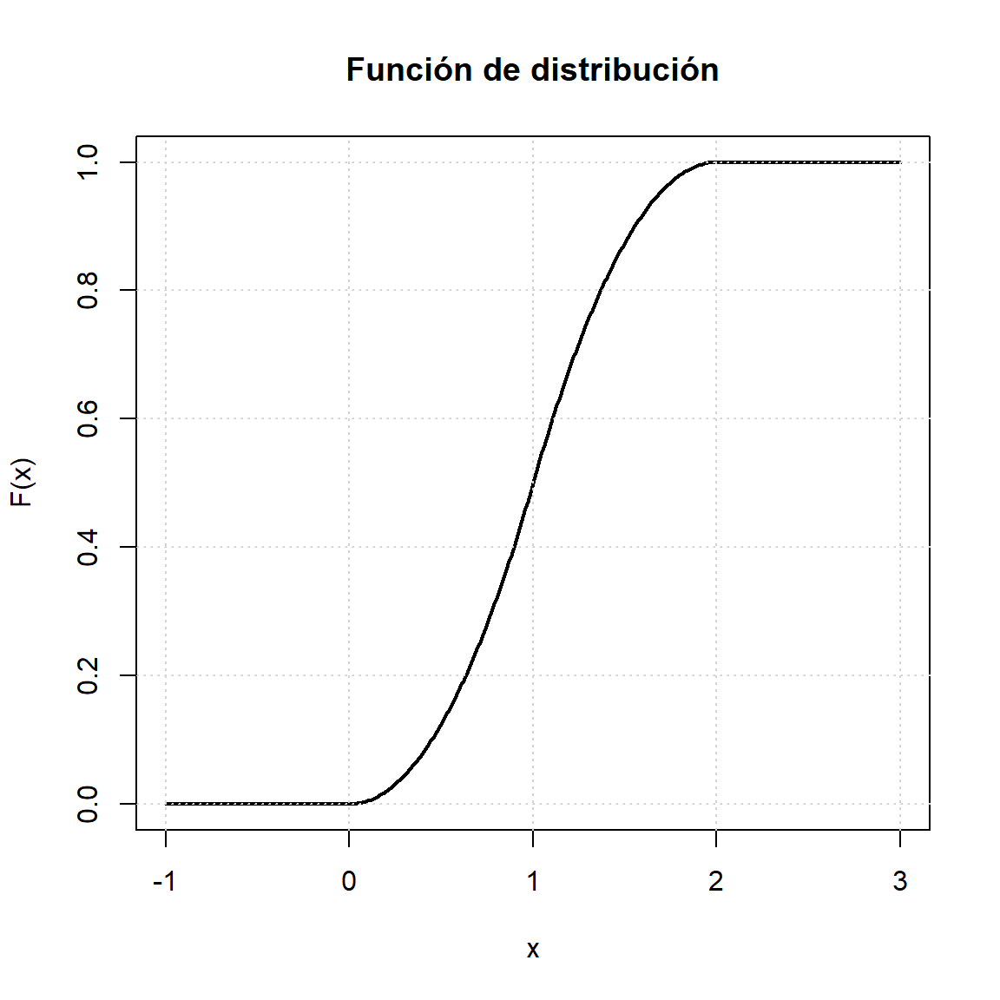
Calcular E[X] y la Varianza de X
El valor esperado de una variable continua se calcula mediante:
E[X]=\int_{-\infty}^{\infty} x f(x)\,dx
Como la densidad solo es diferente de cero en (0,1) y [1,2), se tiene:
E[X]=\int_0^1 x(x)\,dx+\int_1^2 x(2-x)\,dx
En la primera integral:
\int_0^1 x^2\,dx=\left[\frac{x^3}{3}\right]_0^1=\frac{1}{3}
En la segunda:
\int_1^2 x(2-x)\,dx=\int_1^2 (2x-x^2)\,dx
=\left[x^2-\frac{x^3}{3}\right]_1^2
=\left(4-\frac{8}{3}\right)-\left(1-\frac{1}{3}\right) = \frac{4}{3}-\frac{2}{3} = \frac{2}{3}
Sumando ambas partes:
E[X]=\frac{1}{3}+\frac{2}{3}=1
Para calcular la varianza de X, primero calculamos E[X^2]:
E[X^2]=\int_{-\infty}^{\infty} x^2 f(x)\,dx
Entonces:
E[X^2]=\int_0^1 x^2(x)\,dx+\int_1^2 x^2(2-x)\,dx
La primera integral es:
\int_0^1 x^3\,dx=\left[\frac{x^4}{4}\right]_0^1=\frac{1}{4}
La segunda integral:
\int_1^2 x^2(2-x)\,dx=\int_1^2 (2x^2-x^3)\,dx
=\left[\frac{2x^3}{3}-\frac{x^4}{4}\right]_1^2
=\left(\frac{16}{3}-4\right)-\left(\frac{2}{3}-\frac{1}{4}\right)
=\frac{4}{3}-\frac{5}{12} =\frac{16}{12}-\frac{5}{12} =\frac{11}{12}
Por tanto:
E[X^2]=\frac{1}{4}+\frac{11}{12} =\frac{3}{12}+\frac{11}{12} =\frac{14}{12} =\frac{7}{6}
La varianza se obtiene con:
Var(X)=E[X^2]-(E[X])^2
Sustituyendo los valores:
Var(X)=\frac{7}{6}-1=\frac{1}{6}
Hallar los percentiles 30 y 70 de la distribución
El percentil 30 es el valor x tal que:
F(x)=0.30
Como ese valor cae en el tramo 0 < x < 1, usamos:
\frac{x^2}{2}=0.30
x^2=0.60
x=\sqrt{0.60}\approx 0.775
Entonces:
P_{30}\approx 0.775
Ahora hallamos el percentil 70, que satisface:
F(x)=0.70
Este valor pertenece al tramo 1 \le x < 2, así que:
2x-\frac{x^2}{2}-1=0.70
2x-\frac{x^2}{2}=1.70
Multiplicando por 2:
4x-x^2=3.40
x^2-4x+3.40=0
Aplicamos la fórmula cuadrática:
x=\frac{4\pm\sqrt{16-13.6}}{2} = \frac{4\pm\sqrt{2.4}}{2}
Tomamos la solución que pertenece al intervalo [1,2]:
x\approx \frac{4-1.549}{2}\approx 1.225
Por tanto:
P_{70}\approx 1.225
En una población, la cantidad de plomo que tiene una persona en la sangre, medida en p.p.m., es una variable aleatoria con función de densidad:
f(x) = \begin{cases} \frac{x}{500} & \text{si } 0 \le x < 20 \\ \frac{50 - x}{750} & \text{si } 20 \le x < 50 \\ 0 & \text{en el resto} \end{cases}
Sea X una variable aleatoria continua que representa la cantidad de plomo en la sangre (en p.p.m.), cuya función de densidad está dada por:
f(x)= \begin{cases} \frac{x}{500}, & 0 \le x < 20 \\ \frac{50-x}{750}, & 20 \le x < 50 \\ 0, & \text{en otro caso} \end{cases}
Representar f(x) gráficamente.
Grafica de la función de densidad
x <- seq(0,60,by=0.1)
f <- ifelse(x<20, x/500,
ifelse(x<50, (50-x)/750,0))
plot(x,f,type="l",lwd=2,
main="Función de densidad",
xlab="x",ylab="f(x)")
grid()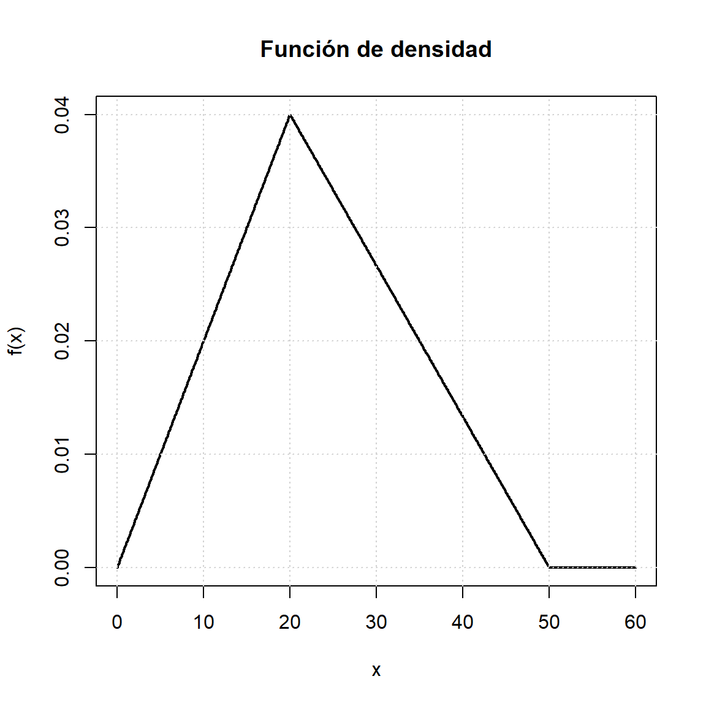
Grafica de la función de distribución
x <- seq(0,60,by=0.1)
F <- ifelse(x<20, x^2/1000,
ifelse(x<50, 0.4 + (50*x - x^2/2 - 800)/750,1))
plot(x,F,type="l",lwd=2,
main="Función de distribución",
xlab="x",ylab="F(x)")
grid()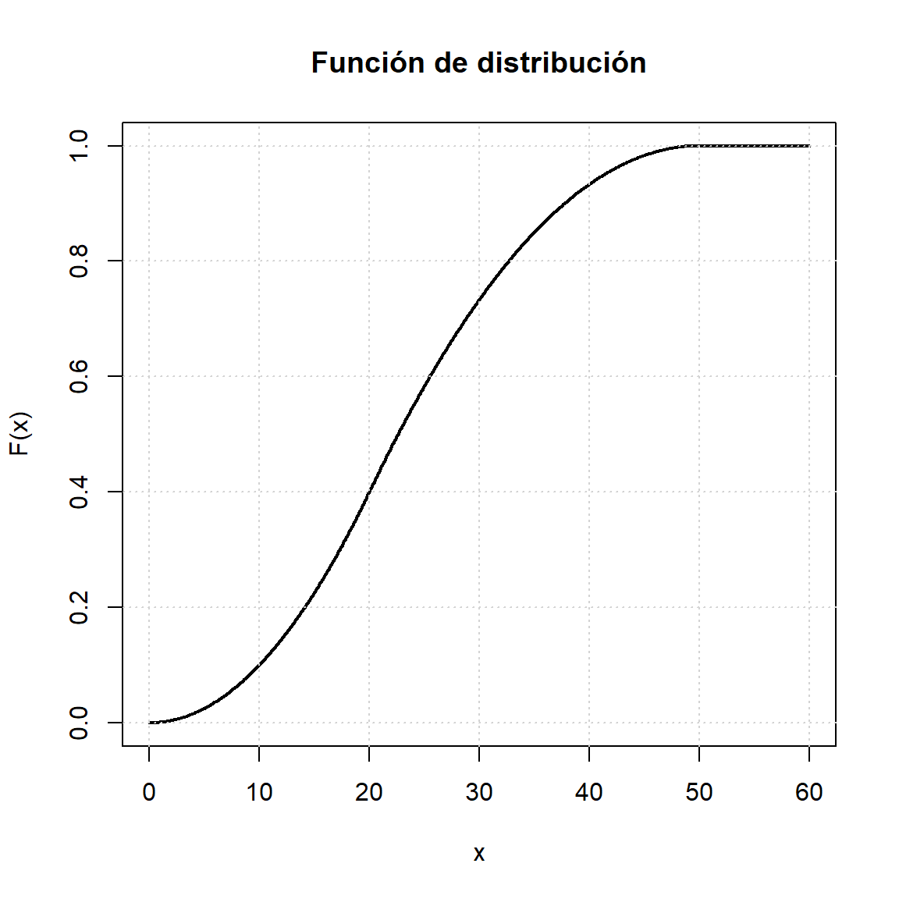
Demostrar que f(x) es una función de densidad
Para verificar que f(x) es una función de densidad, se deben cumplir dos condiciones fundamentales:
La primera condición se cumple porque en los intervalos definidos la función es positiva y fuera de ellos es cero.
Ahora verificamos la integral total:
\int_{-\infty}^{\infty} f(x)\,dx = \int_0^{20} \frac{x}{500}\,dx + \int_{20}^{50} \frac{50-x}{750}\,dx
Calculamos la primera integral:
\int_0^{20} \frac{x}{500}\,dx = \frac{1}{500}\int_0^{20} x\,dx = \frac{1}{500}\left[\frac{x^2}{2}\right]_0^{20}
= \frac{1}{500}\cdot \frac{20^2}{2} = \frac{1}{500}\cdot \frac{400}{2} = \frac{200}{500} = 0.4
Ahora calculamos la segunda integral:
\int_{20}^{50} \frac{50-x}{750}\,dx = \frac{1}{750}\int_{20}^{50} (50-x)\,dx
= \frac{1}{750}\left[50x-\frac{x^2}{2}\right]_{20}^{50}
= \frac{1}{750}\left[ (2500-1250)-(1000-200) \right] = \frac{1}{750}(1250-800) = \frac{450}{750} = 0.6
Sumando ambas áreas:
0.4 + 0.6 = 1
Por lo tanto, f(x) es una función de densidad válida.
Probabilidad condicional
Se desea calcular el porcentaje de personas con más de 40 p.p.m., dado que tienen más de 15 p.p.m.:
P(X>40 \mid X>15)=\frac{P(X>40)}{P(X>15)}
Primero calculamos P(X>40):
P(X>40)=\int_{40}^{50} \frac{50-x}{750}\,dx
= \frac{1}{750}\left[50x-\frac{x^2}{2}\right]_{40}^{50} = \frac{1}{750}(1250-1200) = \frac{50}{750} = \frac{1}{15}
Ahora calculamos P(X>15):
P(X>15)=\int_{15}^{20}\frac{x}{500}dx+\int_{20}^{50}\frac{50-x}{750}dx
= \frac{1}{500}\left[\frac{x^2}{2}\right]_{15}^{20} + 0.6
= \frac{1}{500}\cdot \frac{(400-225)}{2} + 0.6 = \frac{175}{1000}+0.6 = 0.775
Finalmente:
P(X>40 \mid X>15)=\frac{1/15}{0.775}\approx 0.086
Esto corresponde aproximadamente al 8.6%.
Valor esperado
El valor esperado de la variable se calcula mediante la expresión:
E[X]=\int x f(x)\,dx
Sustituyendo la función por tramos:
E[X]=\int_0^{20} x\frac{x}{500}dx + \int_{20}^{50} x\frac{50-x}{750}dx
= \int_0^{20} \frac{x^2}{500}dx + \int_{20}^{50} \frac{50x-x^2}{750}dx
= \frac{1}{500}\left[\frac{x^3}{3}\right]_0^{20} + \frac{1}{750}\left[25x^2-\frac{x^3}{3}\right]_{20}^{50}
= \frac{8000}{1500} + \frac{15000}{750} = \frac{16}{3}+20 = \frac{76}{3} \approx 25.33
Probabilidad
Se desea calcular la probabilidad de que el nivel de plomo sea menor a 25:
P(X<25)
Se divide el cálculo en dos intervalos:
P(X<25)=P(0<X<20)+P(20<X<25)
=0.4 + \int_{20}^{25} \frac{50-x}{750}dx
= 0.4 + \frac{1}{750}[50x-\frac{x^2}{2}]_{20}^{25}
= 0.4 + \frac{1}{750}(937.5-800) = 0.4 + 0.1833 = 0.5833
P(X<25)=\frac{7}{12}
Distribución binomial
Sea Y el número de personas (40) y hallan entre 15 y 20 personas con nivel de plomo menor a 25 p.p.m.
Entonces:
Y \sim Binomial(40, p)
donde:
p=P(X<25)=\frac{7}{12}
Se desea calcular:
P(15 \le Y \le 20)=\sum_{k=15}^{20} \binom{40}{k} p^k (1-p)^{40-k}
Esta probabilidad puede calcularse numéricamente utilizando software como R, los resultados obtenidos son los siguientes.
Obtenemos las probabilidades individuales:
# Parámetros
n <- 40
p <- 7/12
# Valores de interés
k <- 15:20
# Probabilidad exacta
probabilidades <- dbinom(k, size = n, prob = p)
print(probabilidades)[1] 0.003872315 0.008470688 0.016742066 0.029949697 0.048550035 0.071368551Luego obtenemos la probabilidad total de P(15 \le Y \le 20):
# Parámetros
n <- 40
p <- 7/12
# Valores de interés
k <- 15:20
# Probabilidad exacta
probabilidades <- dbinom(k, size = n, prob = p)
# Resultado total
resultado <- sum(probabilidades)
print(resultado)[1] 0.1789534Y finalmente graficamos la respuesta obtenida:
# Valores posibles
x <- 0:n
# PMF binomial
y <- dbinom(x, size = n, prob = p)
# Gráfica
plot(x, y,
type = "h",
lwd = 2,
xlab = "Número de personas (Y)",
ylab = "P(Y = k)",
main = "Distribución Binomial Y ~ Bin(40, 7/12)")
# Resaltar intervalo [15,20]
points(k, dbinom(k, n, p), pch = 16)
grid()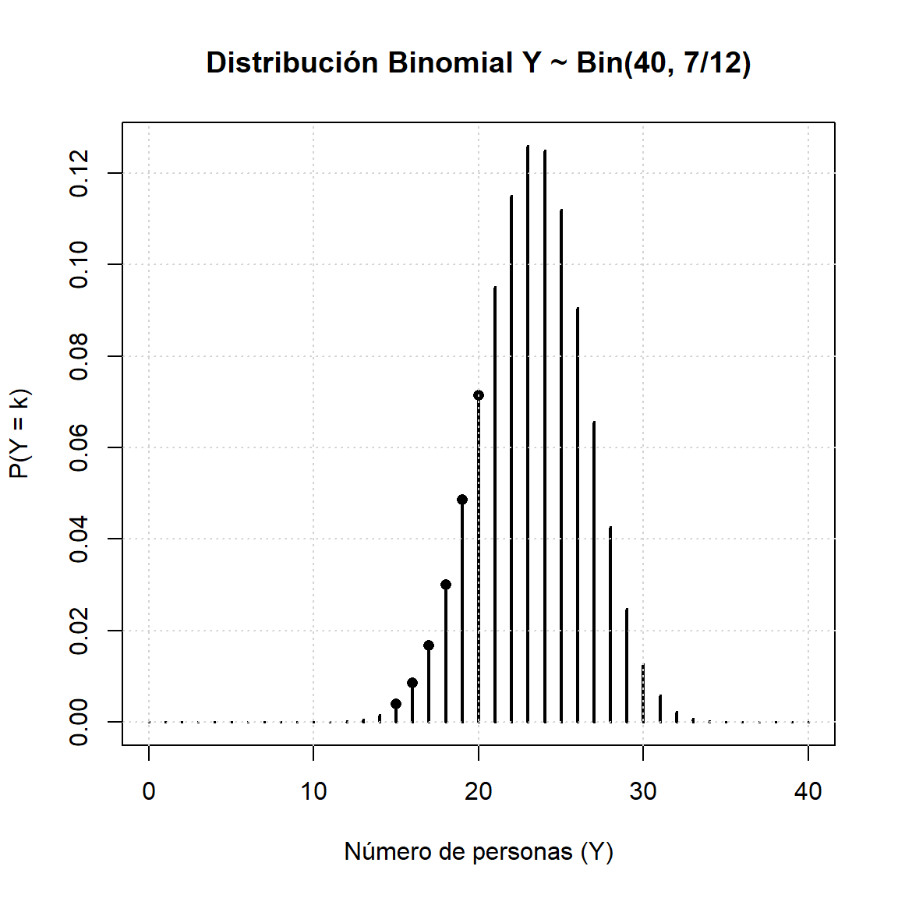